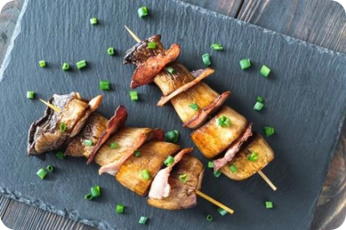

Sate Jamur
Mudah 15 Menit
Bahan-bahan
- 1 bungkus saus tiram
- 200 gram jamur tiram, cuci bersih
- Air secukupnya
- 2 sdm kecap manis
- Bumbu kacang siap saji
- Minyak secukupnya
- Tusuk sate secukupnya
Cara Membuat
- Tuang air ke dalam panci, lalu masak hingga mendidih. Rebus jamur tiram dalam air mendidih sekitar 3 menit.
- Tiriskan jamur, dan suwir-suwir dengan ukuran sedikit besar.
- Susun jamur dengan menusukkan jamur pada tusuk sate. Sisihkan.
- Rendam jamur dalam bumbu yang dibuat dari saus tiram dan kecap manis. Diamkan sejenak.
- Siapkan teflon dan oleskan minyak, bakar jamur sampai matang.
- Angkat sate, dan disajikan dengan bumbu kacang yang sudah dilelehkan sebelumnya.
- Sate jamur siap disantap sebagai camilan atau dimakan bersama nasi.
|